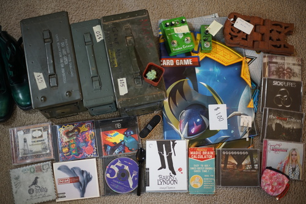
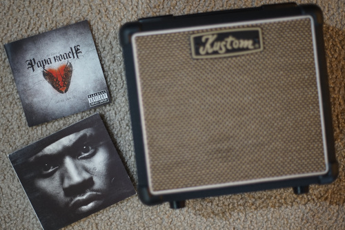

You know what they say right?? Just keep drawing?? I'm sorry I didn't finish any bideo games or manga. I can't!! There's too much to do!!
Ryan said this was very me and wouldn't let me leave it!
Ryan's. The download code expired in 2017 but still worked
Ryan's.
unlimited drawing real estate is waiting for you at the thrift store
My favorite thrift stores are yard sards. All CDs were under 25 cents unless marked. Ryan actually tried haggling himself this time! Watch out, world!! I'm gonna train the next haggling master!
I have so many shoes, yet I choose to wear the falling apart old navy keds knock offs my coworker gave me last year. I think I'll actually throw them out now.
Marked $25.
Also marked $25. She was willing to take $10, but only had $9 in change for my $20
Ryan's
Ryan why??
Ryan's
I told him it was empty and he said I could take it for free so uhh free album art I guess.
Ryan's. Amazingly, the seller talked herself down from $1
I didn't bring enough coins! Small bills and coins are crucial to getting the best deal.
It always sucks to find out parents are selling their children's items without permission, but their loss is my gain. Parents have no idea what the value of any item is and won't look it up. This is lucky for me!
Omake: Ryan has been wanting to check out this amp, so he brought his guitar to the pawn shop to test it. The owner was shocked and said he was the second person in 20 years to bring their own guitar in.
I was really on the edge since this is a greatest hits, but Ryan bought it for me anyway. Thank you, Ryan!! It doesn't have Blood Brothers ;-; but omg he actually said the f word in last resort!! I've never heard it!!!!!